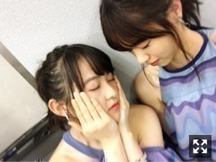
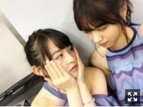
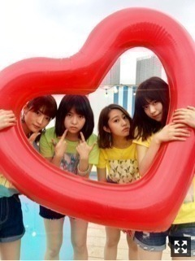
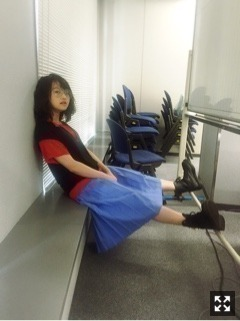

本日は盛りだくさんでした！
お台場みんなの夢大陸テーマソングの
「ひと夏の長さより・・・」を、
音楽の日では太陽ノックと
18th表題曲「逃げ水」TV初披露でした〜
ライブは非常に強い日差しの中でした！
汗が止まりませんでした。
クラクラしながらも楽しかったです、
ほんとに体力無くなったなあ
脱水症状とか熱中症気を付けましょう。


みんな肩出し

遅くなりましたが18枚目シングル
選抜3列目です。
46分の18
この場所が如何に貴重か
この場に見合うことができているのか
人それぞれ。
私自身はいろいろ考えたら
できてないことの方がほとんどです。
しかしこうしてまた選んでいただきました。
なんとなくいちばん最初に呼ばれる気がした
とは、なんでか
この位置は今の自分に適当なポジションだと
思ったからです。
15thの期間からいままでずっと、
まとまりきらないくらい
いろんなことがありまして、！
それは仕事もプライベートも両方。
振り返ったら、解放されて楽しかったようで
寂しくなってしまうような、そんな状況。
17th期間はたくさんの波がきました。
こんなになってしまうのか
というくらいに動けなくなって
しまうこともありました。
夏シングルの18th
しっかり人として、冷静さ半分くらい。
やるべきことをやろう。
そして元気よく、楽しもうと思います。
これは常に、持っていなければいけない
課題なのですが。
お伝えしたいこといくつかあるけど、、
ちゃんと準備して、自信持ったら
どんと言いたいな、
いろいろ巻き込んで大きくなっていくー
応援してくださる人に
喜んでいただけるよう
がんばります

椅子に座らない人
桃ちゃん与田ちゃんのWセンター
18thシングル『逃げ水』
盛り上げ！どうぞよろしくお願いします！
まりか